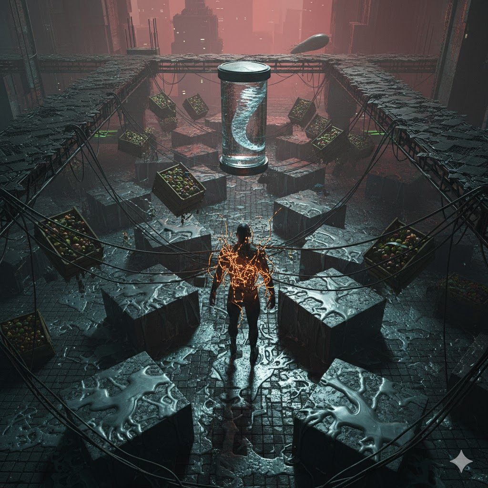

CURRENT_ANOMALIES 042
| ID | TYPE | SEC | STATUS |
|---|---|---|---|
| #SPR-42 | GRAV | SPR_D | CRITICAL |
| #FNN-09 | MATTER | MRKT | VOLATILE |
| #SLN-11 | LOGIC | CORE | OVERRIDE |
| ID | TYPE | SEC | STATUS |
|---|---|---|---|
| #SPR-42 | GRAV | SPR_D | CRITICAL |
| #FNN-09 | MATTER | MRKT | VOLATILE |
| #SLN-11 | LOGIC | CORE | OVERRIDE |

Vector failure and 1.12g atmospheric analysis.
>> ACCESS_DATAThermodynamic stress and molecular shifts.
>> INSPECT
Bio-metric surveillance and neural tethering.
>> MONITOR
Dimensional shearing and reality anchors.
>> VIEW_VOID